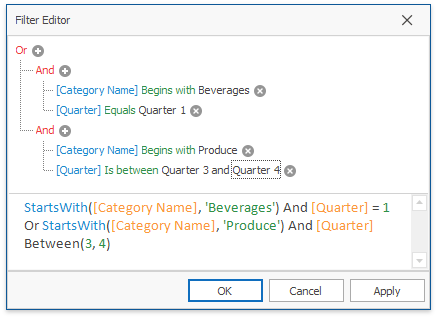

Build Complex Filter Criteria
To build complex filter criteria consisting of multiple filter clauses using various filter operators, you can use a Prefilter (Filter Editor):

The Prefilter does not affect filtering via Filter Popup Windows.
To invoke a Prefilter, click an empty space within the Pivot Table header region and select Show Prefilter from the context menu.

After you have built and applied a filter condition, a prefilter panel appears at the Pivot Table bottom. This panel displays the filter condition.

To modify a filter condition, open a Prefilter. You can now do it by clicking the Edit Prefilter button.
To temporarily disable filtering, uncheck the  button.
button.
To remove filtering, click the  button.
button.
For information on the Prefilter filtering capabilities, see Filter Data via the Filter Editor. To learn how to create filter criteria using a Prefilter, please see Examples of Using the Filter Editor.